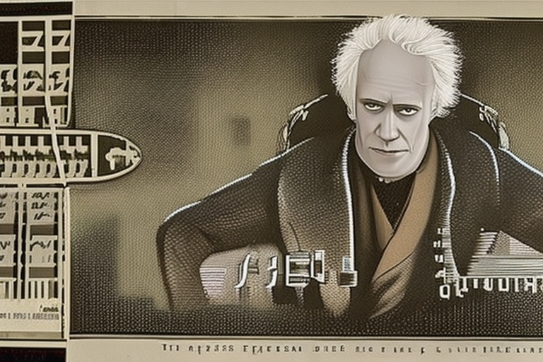

Filosofía del Absurdo
Tu Vida es Absurda
Cuál es el propósito de la vida?
Si alguien nos preguntara cuál es el propósito de la vida, ese alguien está asumiendo que la vida tiene un propósito. Pero, ¿es así?, ¿tiene realmente la vida un propósito?, ¿es posible que la vida no tenga ningún propósito? Atraves de la lectura de estos filosofos el lector podrá arribar a algun tipo de conclusión personal.
En la mitología griega, Sísifo (Σίσυφος) fue fundador y rey de Éfira, más tarde conocida como Corinto; si es que no es cierto que heredó el trono de Medea. Era uno de los siete hijos de Eolo y Enareta, y esposo de Mérope, hija de Atlante. Sísifo era un ejemplo de rey impío y es conocido por su castigo ejemplar que fue empujar una piedra cuesta arriba por una montaña pero, antes de llegar a la cima, volvía a rodar hacia abajo, hecho que se repetía una y otra vez como ejemplo de lo frustrante y absurdo del proceso. El término «trabajo de Sísifo», que se utiliza en la actualidad para describir un trabajo duro que debe hacerse una y otra vez, tiene su origen en el castigo de Sísifo. Sísifo era notable por su astucia, pero ni siquiera él supo prever a Autólico, que le robaba su ganado.
Arthur Schopenhauer
Gdansk, 22 de febrero de 1788-Fráncfort del Meno, Reino de Prusia, 21 de septiembre de 1860) fue un filósofo alemán, considerado uno de los más brillantes del siglo xix y de mayor importancia en la filosofía occidental, de los primeros en manifestarse abiertamente como ateo, así como el máximo representante del pesimismo filosófico.En su sistema reunió teoría del conocimiento, metafísica, estética y ética a partir de un mismo eje, caracterizando al mundo de los fenómenos como la manifestación de una voluntad ciega e irracional, la cual sería la esencia del mundo o noúmeno.
Friedrich Nietzsche

Röcken, 15 de octubre de 1844-Weimar, 25 de agosto de 1900) fue un filósofo, poeta, músico y filólogo alemán, cuya obra ha ejercido una profunda influencia en el pensamiento mundial contemporáneo y en la cultura occidental. Nietzsche escribió sobre temas tan diversos como el arte, la filología, la música, la historia, la religión, la ciencia o la tragedia. Hizo una crítica de la cultura, la religión y la filosofía occidental mediante la genealogía de los conceptos que las integran, basada en el análisis de las actitudes morales (positivas y negativas) hacia la vida.
Albert Camus

Argelia francesa, 7 de noviembre de 1913-Villeblevin, Francia, 4 de enero de 1960) fue un novelista, ensayista, dramaturgo, filósofo y periodista francés nacido en la Argelia francesa. Su pensamiento se desarrolla bajo el influjo de los razonamientos filosóficos de Schopenhauer, Nietzsche y el existencialismo alemán. Se le ha atribuido la conformación del pensamiento filosófico conocido como absurdismo, si bien en su texto «El enigma» el propio Camus reniega de la etiqueta de «profeta del absurdo». Se le ha asociado frecuentemente con el existencialismo, aunque Camus siempre se consideró ajeno a él. Pese a su alejamiento consciente con respecto al nihilismo, rescata de él la idea de libertad individual.